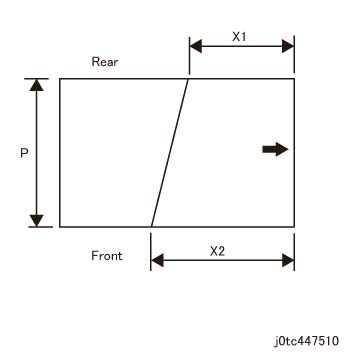
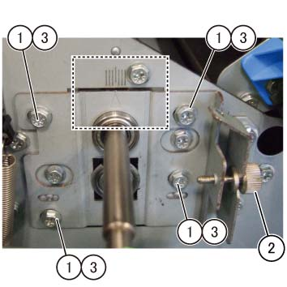

ADJ 47.11.1 折痕 歪斜 调整 
目的
Ensure 纸张 is fed properly by adjusting 折痕 Regi 位置.

As 折痕 歪斜 调整 已执行 at the factory 用于 shipment, 执行 此 调整 仅 当...时 it is necessary 在...之上 request.
[检查]
输出 任何 折痕 job.
测量 歪斜 数量 (200 mm equivalent).
测量 X1, X2.
Calculate the 200 mm equivalent 值 S.
S=200/Px(X2-X1)

(图 1) tc447510
执行 调整 当...时 the 歪斜 数量 (200 mm equivalent) S 不 equal the requested 值.
调整
打开前盖板 (PL 47.1)
拆卸 折痕 Inner 盖板. (PL 47.1)
调整 位置 的 Trans Reigi 辊 (PL 47.11).
松开螺钉 (x4) 的 Regi 板 (PL 47.14)
转动 调整 螺钉 (PL 47.14) 和 调整 Trans Regi 辊 位置.
The Regi 板 移动 向右 当...时 the 调整 螺钉 is rotated clockwise.
The Regi 板 移动 向左 当...时 the 调整 螺钉 is rotated counterclockwise.
One scale marking: 0.5 mm 歪斜 数量 (200 mm equivalent)
在...之后 the 调整, 拧紧螺钉 (x4).

(图 2) tcw447501